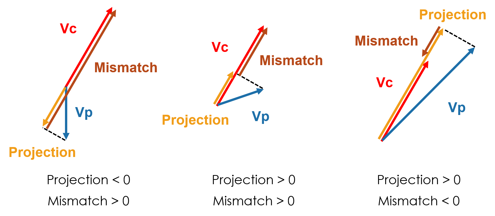

library(shiny)
library(leaflet)
library(raster)
library(colorRamps)
library(plotrix)
library(rgdal)IMCP: An Interactive Map of Climate and Phenology
Click on this link to try out the interactive map.
(You might have to try a few times if the app is in the sleeping mode and takes too long to load.)
1 Introduction
Plant phenology, the timing of recurring biological events, is a sensitive indicator to climate change. However, the responses of plant phenology to climate change usually vary among locations, time periods, and plant taxa (Richardson et al., 2013). For example, spring leaf-out events have been reported to advance at the rate of 0.3–14 days/decade. Such inconsistencies restrict the comprehensive understanding the impacts of climate change.
the NASA MEaSUREs Vegetation Index and Phenology (VIP) global datasets constructed from satellite remote sensing images allow us to examine the phenological change on a global extent. The original format of the data (.hdf) is not easy for the public to navigate. This is incompatible with the increasing public interests in phenological change, which is apparent from the collective data collection efforts such as USA National Phenology Network.
The objective of this project is therefore to facilitate the visualization of global climate change and phenological shift from 1981 to 2014 through an interactive map. Specifically, I used mean annual temperature (MAT) as a proxy for climate and used start of growing season (SOS) as a proxy for phenology. The final product has four main features:
1. changing climate and phenology over time,
2. velocity of change – a derived metric for comparison,
3. location-specific statistics, and
4. temporal and spatial patterns.
Two packages, leaflet and shiny, were used to construct the interactive maps, with leaflet creating the static maps and shiny creating the dynamic elements. In this report, I introduce the main structure and key features of the interactive map, as well as how they are coded.
Note that the complete executable code are app.R for the app structure and prepare-files.R for preparing files for the app. The code snippets in this report are taken from two files and are provided for demonstration purposes.
2 General structure
The general structure of the interactive map consists of
1. data preparation,
2. a UI (user interface), and
3. a server. The code for this app is app.R.
At the start of the code, I did the preparations including loading packages,
loading datasets,
file <- c("data/TMP_World.nc")
TMP <- brick(file)
allyears <- rep(1, nlayers(TMP))
mnTMP <- stackApply(TMP, indices = allyears, fun = mean)
file <- c("data/SOS_World_0.5deg_QA_Smooth.nc")
SOS <- brick(file)
allyears <- rep(1, nlayers(SOS))
mnSOS <- stackApply(SOS, indices = allyears, fun = mean)
Vc <- raster("data/Vc.nc")
Vp <- raster("data/Vp.nc")
projection <- raster("data/projection.nc")
mismatch <- raster("data/mismatch.nc")
TMP_df <- as.data.frame(TMP, xy = T)
SOS_df <- as.data.frame(SOS, xy = T)
time<-1981:2014and specifying color palettes.
pal_tmpano <- colorNumeric(palette = matlab.like(10), domain = c(-3,3), na.color = "transparent")
pal_sosano <- colorNumeric(palette = rev(matlab.like(10)), domain = c(-30,30), na.color = "transparent")
pal_tmp <- colorNumeric(palette = matlab.like(10), domain = c(-20,40), na.color = "transparent")
pal_sos <- colorNumeric(palette = rev(matlab.like(10)), domain = c(0,365), na.color = "transparent")
qpal_Vc <- colorBin("Reds", domain = c(0,10000),bins = c( 0, 1, 5, 10, 20, 100, 1000, 10000),na.color = "transparent")
qpal_Vp <- colorBin("Blues", domain = c(0,10000),bins = c( 0, 1, 5, 10, 20, 100, 1000, 10000),na.color = "transparent")
qpal_projection <- colorBin(rev(matlab.like(10)), domain = c(-400,400),bins = c(-400,-100,-20,-10,-5,-1,0, 1, 5, 10, 20, 100,400),na.color = "transparent")
qpal_mismatch <- colorBin(matlab.like(10), domain = c(-400,400),bins = c(-400,-100,-20,-10,-5,-1,0, 1, 5, 10, 20, 100,400),na.color = "transparent")The UI specifies the layout of the map, control, and output. (Certain details are omitted here.)
ui<-fluidPage(
navbarPage("IMCP: An Interactive Map of Climate and Phenology", id="nav",
tabPanel("Mean Annual Temperature vs Start of Season",
# ...
leafletOutput("raster_map", height=300,width=650),
# ...
tags$div(id="cite",
'Data compiled for ', tags$em('"An Interactive Map of Climate and Phenology"'), ' by Yiluan Song')
)
)
)The server specifies the responses of the map to user’s actions.(Certain details are omitted here.)
server<-function(input, output){
output$raster_map = renderLeaflet({leaflet(width = "100%") %>%
addTiles()%>%
setView(lng = -35, lat = 30, zoom = 1)})
#Display selected layers
observe({
if(input$layer=="MAT Anomaly") {}
if(input$layer=="SOS Anomaly") {}
if(input$layer=="Mean MAT") {}
if(input$layer=="Mean SOS") {}
if(input$layer=="MAT Velocity") {}
if(input$layer=="SOS Velocity") {}
if(input$layer=="Projection") {}
if(input$layer=="Mismatch") {}
})
#Show popup on click
observeEvent(input$raster_map_click, {})
#Matrix plot on click
observeEvent(input$raster_map_click, {})
#Lineplot on click
observeEvent(input$raster_map_click, {})
}The following command integrates the previous elements and make the Shiny app. It should be noted that the R script need to be named app.R for it to run properly. Setting working directory should also be avoided, so files needed are stored in the same path as the R script.
shinyApp(ui, server)3 Changing climate and phenology over time
One of the most effective way of visualizing climate change is to observe the changes through time. The user are able to selectively display MAT or SOS using a drop-down menu, and navigate to the designated year using a time slider. The anomalies of MAT and SOS, i.e., the differences in the absolute values and the mean values, were displayed instead of the raw data to allow easy visualization of temporal changes. The mean values of MAT and SOS over the study period (1981-2014) were also displayed for reference.
The drop-down menu and time slider are coded as follows in the UI:
selectInput("layer", "Layer",choices = c("MAT Anomaly", "SOS Anomaly","Mean MAT", "Mean SOS","MAT Velocity","SOS Velocity", "Projection", "Mismatch"))
sliderInput("year", "Year",min=1981, max=2014, value=1, ticks=T)The reactive layers of MAT anomal, SOS anomaly, mean MAT, and mean SOS are coded as follows in the server:
observe({
if(input$layer=="MAT Anomaly") {
reactiveRaster <- reactive({TMP[[input$year-1980]]-mnTMP})
leafletProxy("raster_map") %>%
clearImages() %>%
clearControls() %>%
addRasterImage(reactiveRaster(),colors = pal_tmpano, opacity = 1, layerId = "MAT")%>%
addLegend(pal = pal_tmpano, values = seq(-2,2,by=1),
position = "bottomleft",title = "MAT Anomaly (°C)",
layerId = "MAT")
}
if(input$layer=="SOS Anomaly") {
reactiveRaster <- reactive({SOS[[input$year-1980]]-mnSOS})
leafletProxy("raster_map") %>%
clearImages()%>%
clearControls() %>%
addRasterImage(reactiveRaster(),colors = pal_sosano, opacity = 1, layerId = "SOS")%>%
addLegend(pal = pal_sosano, values = seq(-15,15,by=5),
position = "bottomleft",title = "SOS Anomaly (day)",
layerId = "SOS")
}
if(input$layer=="Mean MAT") {
leafletProxy("raster_map") %>%
clearImages() %>%
clearControls() %>%
addRasterImage(mnTMP, colors = pal_tmp, opacity = 1,layerId = "Mean MAT") %>%
addLegend(pal = pal_tmp, values = values(mnTMP),
position = "bottomleft",title = "Mean MAT ((°C)",
layerId = "Mean MAT")
}
if(input$layer=="Mean SOS") {
leafletProxy("raster_map") %>%
clearImages() %>%
clearControls() %>%
addRasterImage(mnSOS, colors = pal_sos, opacity = 1,layerId = "Mean SOS") %>%
addLegend(pal = pal_sos, values = values(mnSOS),
position = "bottomleft",title = "Mean SOS (day)",
layerId = "Mean SOS")
})4 Velocity of change – a derived metric for comparison
It is difficult to compare the changes between climate and phenology simply by browsing through years, because the changes take place in both spatial and temporal dimensions. The velocity of change represents the pace of geographic movements of the isolines of a certain variable over time (Loarie et al., 2009; Burrows et al., 2011). It takes advantage of both the spatial distributions and temporal dynamics of climate and phenology, integrating them into the same unit (distance over time), and making climate and phenology directly comparable.
I calculated the spatial gradient, temporal gradients, the magnitudes and directions velocities of both MAT and SOS following Burrows et al. (2011) using the functions adapted from the _vocc_package. The velocities of MAT and SOS are referred to as Vc and Vp, respectively. I further calculated the projection of Vp on Vc and the mismatch between Vc and the projection. A positive projection implies that Vp and Vc are on similar directions, and a positive mismatch implies that Vp is slower than Vc on the direction of Vc or on opposite directions.

The core code for calculating velocities, projection, and mismatch are as follows:
install.packages("devtools")
devtools::install_github("cbrown5/vocc")
library(vocc)
calcvelocityXY <- function(grad, slope, y_dist = 111.325){
slope$w <- y_dist * cos(CircStats::rad(slope$y))
grd <- data.frame(NSold = grad$NS, WEold = grad$WE)
grd$NS <- ifelse(is.na(grd$NSold) == TRUE, 0, grd$NSold)
grd$WE <- ifelse(is.na(grd$WEold) == TRUE, 0, grd$WEold)
grd$NAsort <- ifelse(abs(grd$NS)+abs(grd$WE) == 0, NA, 1)
grd$Grad <- grd$NAsort * sqrt((grd$WE^2) + (grd$NS^2))
grd$NS <- grd$NAsort * grd$NS
grd$WE <- grd$NAsort * grd$WE
velocity <- data.frame(x = slope$x, y = slope$y, temporal_trend = slope$slope, spatial_gradient = grd$Grad, NSgrad = grad$NS, WEgrad = grad$WE, angle = grad$angle, w = slope$w, icell = grad$icell)
velocity$velocity <- with(velocity, temporal_trend/spatial_gradient)
velocity$anglenew <- ifelse( velocity$temporal_trend < 0, velocity$angle+180, velocity$angle)
velocity$velocityX <- -velocity$velocity*(velocity$WEgrad/sqrt(velocity$WEgrad^2+velocity$NSgrad^2))
velocity$velocityY <- -velocity$velocity*(velocity$NSgrad/sqrt(velocity$WEgrad^2+velocity$NSgrad^2))
return(velocity)
}file <- c("data/TMP_World.nc")
TMP <- brick(file)
slopedat <- calcslope(TMP,divisor = 1)
allyears <- rep(1, nlayers(TMP))
mnTMP <- stackApply(TMP, indices = allyears, fun = mean)
spatx <- spatialgrad(mnTMP,y_dist = c(111.325, 111.325), y_diff = 0.5)
velodf <- calcvelocityXY(spatx, slopedat)
rtrendC <- rgradC <- rvoccC <- rangleC <- rvoccCX <- rvoccCY <- raster(TMP)
rgradC[spatx$icell] <- sqrt((spatx$NS)^2+ (spatx$WE)^2)
rtrendC[slopedat$icell] <- slopedat$slope
rvoccC[velodf$icell] <- abs(velodf$velocity)
rangleC[velodf$icell] <- velodf$anglenew
rvoccCX[velodf$icell] <- velodf$velocityX
rvoccCY[velodf$icell] <- velodf$velocityY
rvoccC <- crop(rvoccC, e)
rangleC <- crop(rangleC, e)
rvoccCX <- crop(rvoccCX, e)
rvoccCY <- crop(rvoccCY, e)file <- c("data/SOS_World_0.5deg_QA_Smooth.nc")
SOS <- brick(file)
slopedat <- calcslope(SOS,divisor=1)
allyears <- rep(1, nlayers(SOS))
mnSOS <- stackApply(SOS, indices = allyears, fun = mean)
spatx <- spatialgrad(mnSOS,y_dist = c(111.325, 111.325), y_diff = 0.5)
velodf <- calcvelocityXY(spatx, slopedat)
rtrendP <- rgradP <- rvoccP <- rangleP <- rvoccPX <- rvoccPY <- raster(SOS)
rgradP[spatx$icell] <- sqrt((spatx$NS)^2+ (spatx$WE)^2)
rtrendP[slopedat$icell] <- slopedat$slope
rvoccP[velodf$icell] <- abs(velodf$velocity)
rangleP[velodf$icell] <- velodf$anglenew
rvoccPX[velodf$icell] <- velodf$velocityX
rvoccPY[velodf$icell] <- velodf$velocityY
rvoccP <- crop(rvoccP, e)
rangleP <- crop(rangleP, e)
rvoccPX <- crop(rvoccPX, e)
rvoccPY <- crop(rvoccPY, e)
projection <-(rvoccCX*rvoccPX+rvoccCY*rvoccPY)/rvoccC
mismatch <- rvoccC-projectionIn order to shorten the response time of the map, I stored the following four velocity-related maps as netCDF files. I did this step by running prepare-files.R before deploying the app.
I load these processed metrics directly before running the map:
- MAT velocity,
- SOS velocity,
- projection, and
- mismatch
The users were able to selectively display the four layers in the drop-down menu. Note that as the distributions of velocity-related variables are highly over-dispersed, I assigned customized discrete color scales. The layers are coded in the server as follows:
observe({
if(input$layer=="MAT Velocity") {
leafletProxy("raster_map") %>%
clearImages() %>%
clearControls() %>%
addRasterImage(Vc, colors = qpal_Vc, opacity = 1,layerId = "MAT Velocity") %>%
addLegend(pal = qpal_Vc, values = values(Vc),
position = "bottomleft",title = "MAT Velocity (km/year)",
layerId = "MAT Velocity")
}
if(input$layer=="SOS Velocity") {
leafletProxy("raster_map") %>%
clearImages() %>%
clearControls() %>%
addRasterImage(Vp, colors = qpal_Vp, opacity = 1,layerId = "SOS Velocity") %>%
addLegend(pal = qpal_Vp, values = values(Vp),
position = "bottomleft",title = "SOS Velocity (km/year)",
layerId = "SOS Velocity")
}
if(input$layer=="Projection") {
leafletProxy("raster_map") %>%
clearImages() %>%
clearControls() %>%
addRasterImage(projection, colors = qpal_projection, opacity = 1,layerId = "Projection") %>%
addLegend(pal = qpal_projection, values = values(projection),
position = "bottomleft",title = "Projection (km/year)",
layerId = "Projection")
}
if(input$layer=="Mismatch") {
leafletProxy("raster_map") %>%
clearImages() %>%
clearControls() %>%
addRasterImage(mismatch, colors = qpal_mismatch, opacity = 1,layerId = "Mismatch") %>%
addLegend(pal = qpal_mismatch, values = values(mismatch),
position = "bottomleft",title = "Mismatch (km/year)",
layerId = "Mismatch")
}
})5 Location-specific statistics
For users who are interested in not only the general patterns but also details about particular locations, this feature allows them to click on pixels and retrieve detailed information in a pop-up window. The details currently include
- latitude,
- longitude,
- mean MAT,
- mean SOS,
- MAT velocity,
- SOS velocity,
- projection, and
- mismatch.
The pop-up window was coded in the server by observing clicking events, retrieving coordinates, and extracting values from corresponding rasters. It should be noted that although the leaflet maps are wrapped, the longitude values are adjusted so that they are always between -180 and 180.
observeEvent(input$raster_map_click, {
click <- input$raster_map_click
lat<-(90+click$lat)%%180-90
lng<-(180+click$lng)%%360-180
text_lat<-paste("Latitude: ", round(lat,2))
text_lng<-paste("Longtitude: ", round(lng,2))
text_mnTMP<-paste("Mean MAT: ", round(extract(mnTMP,data.frame(lng,lat)),2)," °C")
text_mnSOS<-paste("Mean SOS: ", round(extract(mnSOS,data.frame(lng,lat)),2), " Day")
text_Vc<-paste("MAT Velocity: ", round(extract(Vc,data.frame(lng,lat)),2)," km/year")
text_Vp<-paste("SOS Velocity: ", round(extract(Vp,data.frame(lng,lat)),2)," km/year")
text_projection<-paste("Projection: ", round(extract(projection,data.frame(lng,lat)),2)," km/year")
text_mismatch<-paste("Mismatch: ", round(extract(mismatch,data.frame(lng,lat)),2)," km/year")
content <- as.character(tagList(
text_lat, tags$br(),
text_lng, tags$br(),
text_mnTMP, tags$br(),
text_mnSOS, tags$br(),
text_Vc, tags$br(),
text_Vp, tags$br(),
text_projection, tags$br(),
text_mismatch
))
leafletProxy("raster_map") %>%
clearPopups() %>%
addPopups(click$lng, click$lat, content)
})6 Temporal and spatial patterns
Although the velocity of change metrics integrate information in the spatial and temporal dimensions, detailed temporal and spatial patterns can provide more context to the relationship between phenology an climate. I built in two panels showing
1. temporal trends of MAT and SOS over 34 years at the selected pixel, and
2. MAT and SOS in the neighbouring pixels.
Both sets of figures can inform whether phenology is positively or negatively correlated to climate, but the spatial patterns show historical relationships, whereas temporal trends reveal more recent changes.
The two panels for figures are coded in the UI:
absolutePanel(id = "controls", class = "panel panel-default", fixed = TRUE,draggable = TRUE, top = 120, left = "auto", right = 360, bottom = "auto",width = 300, height = "auto",
h4("Temporal patterns"),
plotOutput("lineplot_TMP", height = 200),
plotOutput("lineplot_SOS", height = 200)
)
absolutePanel(id = "controls", class = "panel panel-default", fixed = TRUE,draggable = TRUE, top = 120, left = "auto", right = 60, bottom = "auto",width = 300, height = "auto",
h4("Spatial patterns"),
plotOutput("neighbours_TMP",height = 200),
plotOutput("neighbours_SOS",height = 200)
)The line plots for temporal patterns are coded as follows in the server:
observeEvent(input$raster_map_click, {
click <- input$raster_map_click
lat<-(90+click$lat)%%180-90
lng<-(180+click$lng)%%360-180
xcoor<-round((lng - 0.25) * 2) / 2 + 0.25
ycoor<-round((lat - 0.25) * 2) / 2 + 0.25
ts_TMP<-as.numeric(TMP_df[TMP_df$x == xcoor & TMP_df$y ==ycoor,c(3:dim(TMP_df)[2])])
ts_SOS<-as.numeric(SOS_df[SOS_df$x == xcoor & SOS_df$y ==ycoor,c(3:dim(SOS_df)[2])])
output$lineplot_TMP <- renderPlot({
plot(ts_TMP~time,type="l",lty=2,
ylab="MAT (°C)",xlab="",
col="red", col.lab="red")
abline(lm(ts_TMP~time),col="red")
})
output$lineplot_SOS <- renderPlot({
plot(ts_SOS~time,type="l",lty=2,
ylab="SOS (Day)",xlab="",
col="dark green", col.lab="dark green")
abline(lm(ts_SOS~time),col="dark green")
})
})The matrix plots for spatial patterns are coded as follows in the server:
observeEvent(input$raster_map_click, {
click <- input$raster_map_click
lat<-(90+click$lat)%%180-90
lng<-(180+click$lng)%%360-180
xcoor<-round((lng - 0.25) * 2) / 2 + 0.25
ycoor<-round((lat - 0.25) * 2) / 2 + 0.25
sp<-SpatialPoints(cbind(xcoor, ycoor))
sp_top<-SpatialPoints(cbind(xcoor, ycoor+0.5))
sp_bottom<-SpatialPoints(cbind(xcoor, ycoor-0.5))
sp_right<-SpatialPoints(cbind(xcoor+0.5, ycoor))
sp_left<-SpatialPoints(cbind(xcoor-0.5, ycoor))
sp_top_left<-SpatialPoints(cbind(xcoor-0.5, ycoor+0.5))
sp_bottom_left<-SpatialPoints(cbind(xcoor-0.5, ycoor-0.5))
sp_top_right<-SpatialPoints(cbind(xcoor+0.5, ycoor+0.5))
sp_bottom_right<-SpatialPoints(cbind(xcoor+0.5, ycoor-0.5))
tmp_neighbours<-matrix(c(extract(mnTMP,sp_top_left),extract(mnTMP,sp_top),extract(mnTMP,sp_top_right),
extract(mnTMP,sp_left),extract(mnTMP,sp),extract(mnTMP,sp_right),
extract(mnTMP,sp_bottom_left),extract(mnTMP,sp_bottom),extract(mnTMP,sp_bottom_right))
, nrow=3, byrow=TRUE)
sos_neighbours<-matrix(c(extract(mnSOS,sp_top_left),extract(mnSOS,sp_top),extract(mnSOS,sp_top_right),
extract(mnSOS,sp_left),extract(mnSOS,sp),extract(mnSOS,sp_right),
extract(mnSOS,sp_bottom_left),extract(mnSOS,sp_bottom),extract(mnSOS,sp_bottom_right))
, nrow=3, byrow=TRUE)
output$neighbours_TMP <- renderPlot({
color2D.matplot(tmp_neighbours,show.values = TRUE, main="Mean MAT (°C)", xlab="Latitude",ylab="Longitude",axes=FALSE,extremes = c("white","red"))
})
output$neighbours_SOS <- renderPlot({
color2D.matplot(sos_neighbours,show.values = TRUE, main="Mean SOS (day)", xlab="Latitude",ylab="Longitude",axes=FALSE,extremes = c("dark green","white"))
})
})7 Concluding remarks
This interactive map was deployed online through shinyapps.io by running the following command in R.
library(rsconnect)
rsconnect::deployApp(appDir = "<insert path to the parent folder of the app.R file>")Overall, I constructed a webpage for users to interactively learn about the climate change and corresponding shift in the last three decades both around the world and in the areas they are interested in. By further developing the design and content, this platform could raise awareness in the biological impacts of climate change and further encourage the development of citizen science in phenology.
References
Burrows, M. T., Schoeman, D. S., Buckley, L. B., Moore, P., Poloczanska, E. S., Brander, K. M., Brown, C., Bruno, J. F., Duarte, C. M., Halpern, B. S., & Holding, J. (2011). The pace of shifting climate in marine and terrestrial ecosystems. Science, 334(6056), 652-655.
Loarie, S. R., Duffy, P. B., Hamilton, H., Asner, G. P., Field, C. B., & Ackerly, D. D. (2009). The velocity of climate change. Nature, 462(7276), 1052.
Richardson, A. D., Keenan, T. F., Migliavacca, M., Ryu, Y., Sonnentag, O., & Toomey, M. (2013). Climate change, phenology, and phenological control of vegetation feedbacks to the climate system. Agricultural and Forest Meteorology, 169, 156-173.